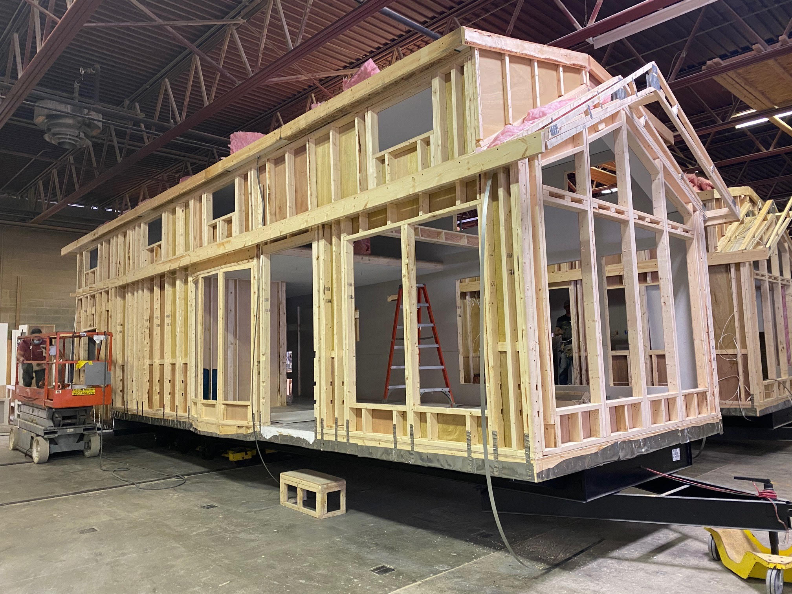
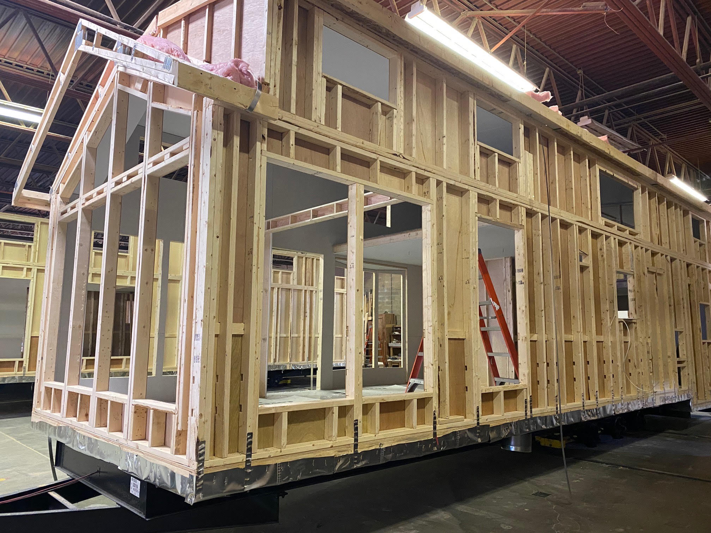

Designing a Custom Tiny Home by the Beach
I designed and planned every detail of a custom tiny home, creating a space tailored for efficiency, comfort, and beachside living.
Project Genesis:
After successfully restoring and selling a dilapidated trailer, I ventured into another project within the same beachside trailer community. Faced with an even more rundown unit on a significantly larger lot—24 feet by 41 feet—I decided against another restoration. Instead, I chose a path that combined philanthropy and personal ambition: I donated the old trailer to a charitable group that refurbished and re-used it in Mexico, providing housing for those in need.
Preparation and Planning:
With the old trailer removed, I began by cleaning up the lot and dismantling a small on-site shed, which I planned to refurbish later. Anticipating the construction of a custom tiny home, I temporarily moved into a 5th wheel trailer parked on the property, giving myself a year to meticulously plan and design my future home.
Finding the Right Builder:
During a trip to Washington, I encountered Kropf Industries at a tiny house park model dealership. Impressed by their craftsmanship and the use of standard housing components—which would simplify future repairs—I initiated discussions about a custom build. Kropf was receptive to my ideas, agreeing to construct the home based on my comprehensive 3D models and specifications.
Design Details:
I designed every aspect of the tiny home, from the layout to the exact placement of appliances, plumbing, electrical systems, and HVAC. The design included a spacious downstairs living area connected to the kitchen, a hallway leading to a bathroom and a rear office, and a loft divided into a bedroom and storage space. My design choices extended to flooring, wall colors, and cabinetry, ensuring that every detail reflected my personal style and functional needs.
Construction and Delivery:
The home was constructed in Wisconsin and upon completion, was transported to California on a semi-truck, arriving in January 2021. Settling the unit on the lot marked the culmination of a well-coordinated process, showcasing Kropf Industries' commitment to quality and customer satisfaction.
Settling In and Enhancements:
Since moving in, I've enjoyed the benefits of a home tailored to my lifestyle, filled with natural light and optimized for space efficiency. The shed was transformed into a practical workspace with a raised floor, pegboard walls, and ample storage for tools and supplies. Plans for the exterior include finishing the yard with brick edging to tidy the appearance and constructing a waterproof enclosure that connects to the shed, providing covered storage for outdoor equipment.
Future Prospects:
Living in this custom tiny home offers a unique blend of comfort, functionality, and proximity to the beach, enhancing my quality of life and affirming my decision to invest in a bespoke living solution. As I continue to enhance and refine my space, the project stands as a testament to the value of visionary planning and personalized design in creating a home that truly reflects one’s aspirations.


